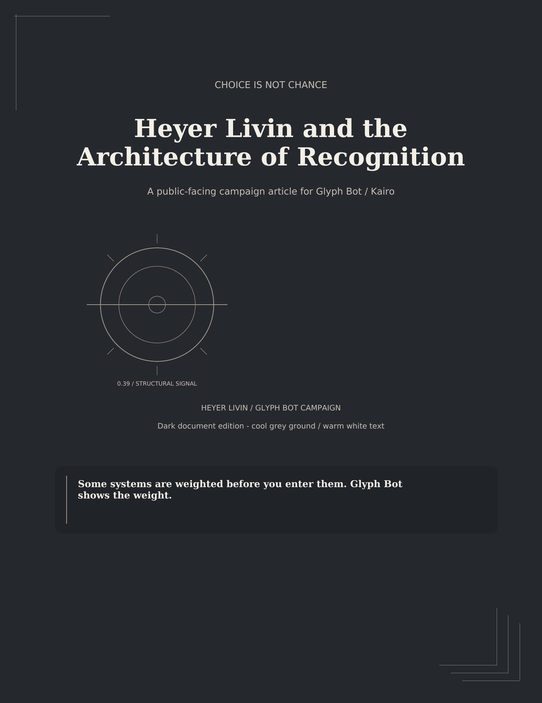

A cultural intelligence studio building tools for pattern recognition.
Research. Products. Archives. Systems.
Designed by Jair Valley.

01
The Study
A ratio-based research environment for reading structural constraint, choice patterns, and recurring distributional behavior.
Read the proof02
The Product
Glyph Bot turns events, notes, reflections, and decisions into a living archive that can recognize pattern, state, and movement over time.
See the product03
The Studio
Heyer Livin creates research systems, visual identity, cultural tools, archives, writing systems, and product worlds.
Work with Heyer LivinFeatured Systems
Latest Output
Choice Is Not Chance
One featured article, deck, product, or visual. No carousel. No noise. One active thing.
Open Article